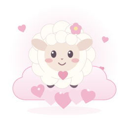

03 /↗
♫
Gospel gratuit
Des compositions pour louer Dieu, nourrir l’espérance et célébrer l’unité.
L’ARTISTE DERRIÈRE L’AVENTURE
333 millions de raisons d’aimer.
Des images, des livres, du gospel et des jeux : un univers chrétien où la foi, la beauté et l’amour se rencontrent.
Explorer mes créations ↗CINQ PORTES OUVERTES
Des expériences interactives et des créations visuelles pour éveiller la curiosité.
emmanuel.galleryUn univers littéraire et artistique, avec des œuvres créées avec ma fille Béthanie.
emmanuelpayet.artDes compositions pour louer Dieu, nourrir l’espérance et célébrer l’unité.
Des motifs et créations inspirantes à retrouver dans ma boutique Redbubble.
Redbubble · h777plx333 millions de raisons d’aimer. Retrouvez mes créations musicales sur Suno.
Suno · @emmanuelpayetVOTRE AVENTURE PATRI-X

VOTRE COMPAGNON DE ROUTE
Progression enregistrée dans ce navigateur. Le partage se fait uniquement à votre demande.
La lumière et la sagesse de Dieu nous rapprochent.